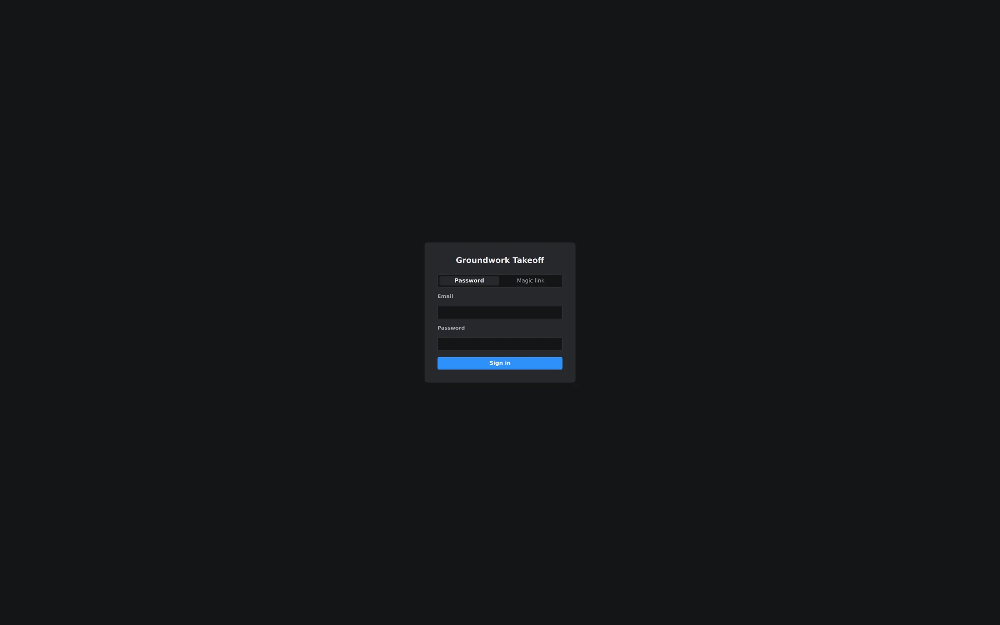

Step 1 — Sign in
Go to app.groundworkai.io (or launch the desktop app) and you'll land on the sign-in screen. Three tabs across the top cover every situation: Password for a normal email-and-password login, Magic link if you'd rather get a one-click sign-in email, and Sign up if you're brand new — the free trial starts the moment your account exists, no card required.

Step 2 — Open a plan
From the Home tab, open Projects and open a PDF plan set. Multi-sheet sets open as one document — page thumbnails run down the side, and the page indicator in the status bar tells you where you are. Once the sheet renders, you're looking at the full workspace: the drawing in the middle, the Quantity Takeoff tree and Library panels docked on the right, and the status bar along the bottom.

Step 3 — Verify the scale
Before you measure anything, glance at the status bar. If the page has no calibration yet, an amber Scale Not Set badge appears next to a Set scale… dropdown. Nothing you draw is trustworthy until that badge is gone — a wrong scale silently wrecks every quantity on the page.

Open Set scale… and either pick the drawing's stated scale (say, 1/4" = 1'-0") or calibrate against a known dimension. Scale is stored per page, so a mixed set — plans at one scale, details at another — stays accurate throughout. The full detail is in Setting & calibrating scale.
Step 4 — Draw your first measurement
- On the Home tab, choose Linear.
- Click along the wall you want to measure — each click drops a vertex. The running length updates live as you go.
- Right-click to finish the run.
- Type a subject when prompted (e.g. "Corridor Partition") and press Enter.

That's a takeoff. The measurement lives on the sheet and as a row in the Quantity Takeoff tree, where quantities roll up automatically. From here, try the other five tools — Area, Perimeter, Volume, Count, and Dimension — covered in The six measurement tools.